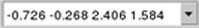

The following figure shows the run control portion of the toolbar. Each control is described in Table 1.
Item |
Button |
Description |
|---|---|---|
Run Context  |
Lists the context for previous runs. The latest run will be the visible entry. Select a run context in the list to zoom to it. |
|
Run DRC on Edit |
Toggles whether or not DRC should be run after every completed edit. |
|
Run DRC |
Runs a flat DRC in the current window. This button is equivalent to using the F12 key or the Tools > Calibre > Run RealTime DRC menu item. |
|
Zoom to Window |
Zooms to window for run context shown. |
|